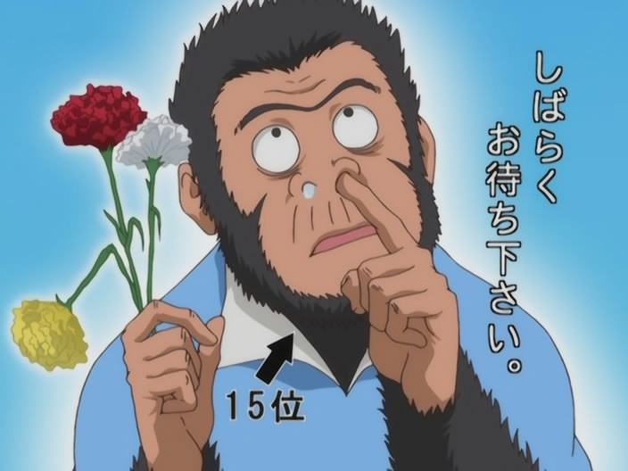
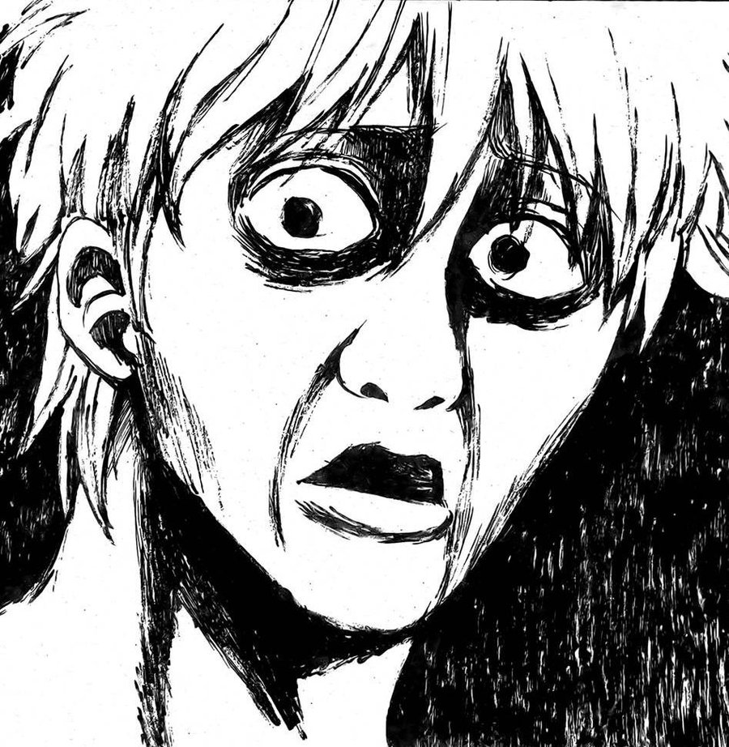

Gintama is a Japanese manga illustrated by Hideaki Sorachi. The series began on December 8th, 2003 in Weekly Shonen Jump and also has been adapted in to anime y Sunrise on September 24, 2005 with 33 minutes runtime.
Gintama is a part of science fantasy and mostly comedy with many different long and short arcs. The story is set near the end of Edo period, where in the series, people in Edo is attacked by Amanto means alien. The plot is focused on an Odd Jobs Gin group (Gintoki, Kagura and Shinpachi) who would do any kind of jobs for a fee.